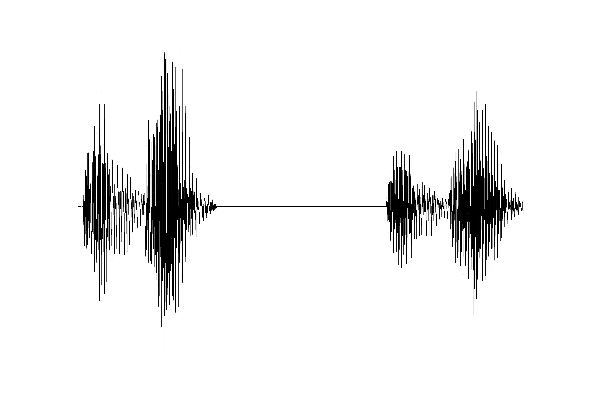

On this page, we look at recordings of two words of Logoori (a Bantu language of Kenya), which translate to English ‘dog’ and ‘new’. The goal is to say exactly how these words are similar, and how they are different, which then tells us something about this language. We will work through a few ways of analyzing and representing the physical properties of these words, uncovering advantages and disadvantages of these methods.
‘dog’: this file contains 9,183 numbers (you can see the numbers here).
‘new’: this file contains 9,191 numbers (you can see the numbers here).
Those walls of numbers by themselves are completely uninformative, and just looking at the numbers, you don’t learn anything about the words. We need better visualization.
We can also graph those numbers, creating a waveform of these utterances of ‘dog’ and ‘new’.

| ‘new’ | ‘dog’ |
An expert phonetician could tell you a very little bit about these words from these pictures.
| Spectrogram of ‘dog’ | Spectrogram of ‘new’ |
An expert phonetician could tell you a more bit about these words from these pictures. But how do we talk about the differences systematically, not using vague descriptions like “a bit darker”, “a bit further up the picture” or “a bit further to the right”? It would be appropriate now to go up there and listen to the recordings, to see if your guess was close.
How well does this massively stripped-down representation preserve the original sound of the ‘dog’ and ‘new’ recordings? These numbers can be converted back to sound, and as you can hear: ‘dog’, ‘new’, there has been a serious loss in sound quality. Go ahead and glance at the table of numbers. Click here to move towards the ultimate solution.
(Time in seconds, Formants 1-3 in Hz)
| ‘dog’ | ‘new’ | ||||||
| Time | F1 | F2 | F3 | F1 | F2 | F3 | |
| 0.02 | 459 | 2198 | 2863 | 491 | 2151 | 2849 | |
| 0.04 | 451 | 2174 | 2885 | 475 | 2155 | 2851 | |
| 0.06 | 464 | 2156 | 2897 | 481 | 2139 | 2845 | |
| 0.08 | 466 | 2107 | 2894 | 485 | 2126 | 2827 | |
| 0.1 | 425 | 2138 | 2831 | 492 | 2110 | 2836 | |
| 0.12 | 473 | 2148 | 2863 | 495 | 2101 | 2820 | |
| 0.14 | 496 | 2158 | 2887 | 496 | 2092 | 2795 | |
| 0.16 | 507 | 2198 | 2816 | 498 | 2071 | 2785 | |
| 0.18 | 503 | 2184 | 2800 | 497 | 2043 | 2755 | |
| 0.2 | 503 | 2169 | 2775 | 496 | 2033 | 2715 | |
| 0.22 | 505 | 2140 | 2710 | 495 | 2021 | 2664 | |
| 0.24 | 507 | 2087 | 2595 | 491 | 2007 | 2526 | |
| 0.26 | 504 | 2023 | 2513 | 491 | 1957 | 2323 | |
| 0.28 | 496 | 1877 | 2458 | 484 | 1845 | 2264 | |
| 0.3 | 500 | 1787 | 2736 | 451 | 1747 | 2199 | |
| 0.32 | 501 | 1958 | 3040 | 443 | 2143 | 3269 | |
| 0.34 | 468 | 2169 | 3197 | 434 | 2128 | 3259 | |
| 0.36 | 588 | 2225 | 3319 | 442 | 2110 | 3216 | |
| 0.38 | 703 | 2245 | 3141 | 446 | 2098 | 3208 | |
| 0.4 | 732 | 2253 | 3308 | 410 | 2086 | 3209 | |
| 0.42 | 743 | 2259 | 3468 | 339 | 2061 | 3198 | |
| 0.44 | 730 | 2261 | 3411 | 326 | 2054 | 3148 | |
| 0.46 | 713 | 2248 | 3378 | 329 | 2067 | 3179 | |
| 0.48 | 702 | 2249 | 3407 | 312 | 2058 | 3062 | |
| 0.5 | 668 | 2267 | 3292 | 310 | 1866 | 2077 | |
| 0.52 | 658 | 2231 | 3312 | 319 | 2056 | 3017 | |
| 0.54 | 673 | 2212 | 3353 | 317 | 2041 | 3423 | |
| 0.56 | 668 | 2188 | 3477 | 355 | 2054 | 3085 | |
| 0.58 | 673 | 2166 | 3393 | 374 | 2035 | 3064 | |
| 0.6 | 581 | 2142 | 3441 | 355 | 2015 | 3185 | |
| 0.62 | 512 | 2141 | 3494 | 294 | 1992 | 3260 | |
| 0.64 | 479 | 2201 | 3431 | 262 | 1887 | 3110 | |
| 0.66 | 425 | 2183 | 3457 | 261 | 1954 | 3272 | |
| 0.68 | 295 | 2117 | 3463 | 258 | 2008 | 3213 | |
| 0.7 | 261 | 2132 | 3520 | 256 | 2082 | 3132 | |
| 0.72 | 344 | 1629 | 2092 | 300 | 2170 | 2239 | |
| 0.74 | 478 | 1062 | 2099 | 335 | 2141 | 2452 | |
| 0.76 | 406 | 811 | 2197 | 351 | 2081 | 2645 | |
| 0.78 | 403 | 824 | 2196 | 359 | 2065 | 2723 | |
| 0.8 | 423 | 826 | 2225 | 369 | 2060 | 2773 | |
| 0.82 | 441 | 864 | 2225 | 380 | 2068 | 2818 | |
| 0.84 | 458 | 892 | 2246 | 381 | 2068 | 2842 | |
| 0.86 | 485 | 906 | 2254 | 389 | 2068 | 2860 | |
| 0.88 | 505 | 912 | 2256 | 396 | 2054 | 2840 | |
| 0.9 | 529 | 909 | 2252 | 406 | 2044 | 2833 | |
| 0.92 | 555 | 955 | 2323 | 423 | 2044 | 2821 | |
| 0.94 | 561 | 1074 | 2454 | 464 | 2054 | 2812 | |
| 0.96 | 546 | 1098 | 2452 | 484 | 2050 | 2804 | |
| 0.98 | 530 | 1051 | 2307 | 496 | 2058 | 2774 | |
| 1 | 535 | 1053 | 2176 | 496 | 2047 | 2748 | |
| 1.02 | 602 | 1068 | 2194 | 499 | 2047 | 2713 | |
| 1.04 | 816 | 849 | 2082 | 504 | 2019 | 2641 | |
| 1.06 | 651 | 1090 | 2084 | 510 | 1997 | 2599 | |
| 1.08 | 614 | 1122 | 2081 | 519 | 1984 | 2572 | |
| 1.1 | 632 | 1111 | 2115 | 553 | 1958 | 2611 | |
| 1.12 | 652 | 1122 | 2112 | 594 | 1952 | 2683 | |
| 1.14 | 656 | 1154 | 2159 | 602 | 1917 | 2682 | |
| 1.16 | 650 | 1162 | 2157 | 606 | 1905 | 2669 | |
| 1.18 | 651 | 1168 | 2191 | 623 | 1909 | 2531 | |
| 1.2 | 658 | 1176 | 2208 | 633 | 1896 | 2426 | |
| 1.22 | 783 | 1172 | 2139 | 676 | 1947 | 2381 | |
| 1.24 | 817 | 1185 | 2148 | 684 | 1996 | 2327 | |
| 1.26 | 757 | 1167 | 2128 | 704 | 1935 | 2273 | |
| 1.28 | 740 | 1177 | 2124 | 710 | 1909 | 2271 | |
| 1.3 | 613 | 1145 | 2085 | 732 | 1744 | 2306 | |
| 1.32 | 632 | 1150 | 2095 | 738 | 1716 | 2259 | |
| 1.34 | 603 | 1173 | 2487 | 730 | 1605 | 2201 | |
| 1.36 | 637 | 1182 | 2639 | 738 | 1641 | 2240 | |
| 1.38 | 1162 | 2213 | 3497 | 712 | 1480 | 2248 | |
| 1.4 | 347 | 1240 | 2774 | 698 | 1493 | 2266 | |
| 1.42 | 618 | 1226 | 2903 | 627 | 1474 | 2101 | |
| 1.44 | 619 | 1202 | 2740 | 682 | 1462 | 2139 | |
| 1.46 | 787 | 1157 | 2561 | 641 | 1353 | 2271 | |
| 1.48 | 620 | 1556 | 3132 | 691 | 1415 | 2290 | |
| 1.5 | 702 | 1530 | 2991 | 666 | 1437 | 2246 | |
| 1.52 | 636 | 1598 | 3025 | 688 | 1429 | 2274 |